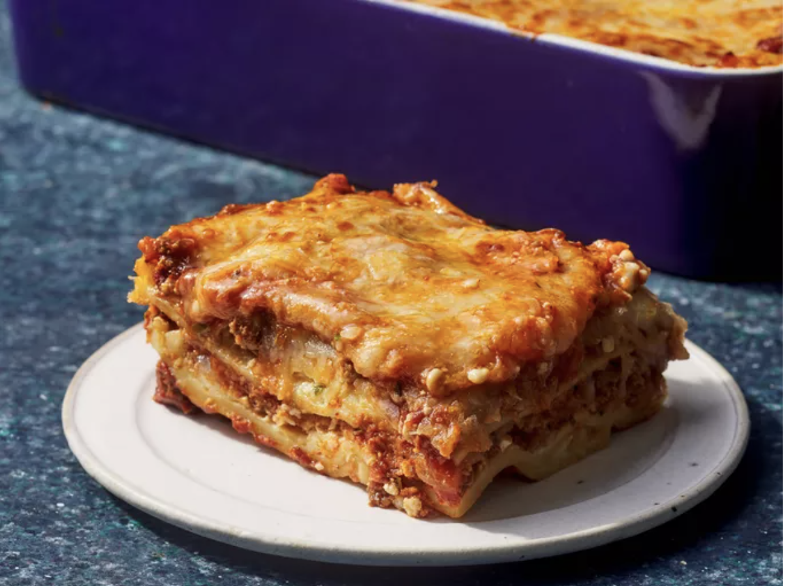

Lasagna Rezept

Beschreibung
Ein typisch hausgemachtes Lasagne Rezept
mit Zutaten, die man in der Regel zuhasue hat.
Mit großer Sicherheit ein voller Erfolg!
Zutaten
Für Die Fleischsoße
- 2 EL Olivenöl
- 1 Zwiebel, fein gehackt
- 2 Knoblauchzehen, gehackt
- 500 g Rinderhack
- 2 EL Tomatenmark
- 1 Dose (400 g) gehackte Tomaten
- 1 TL Zucker
- 1 TL getrockneter Oregano
- Salz, Pfeffer
- Optional: ein Schuss Rotwein
Für Die Béchamelsoße
- 50 g Butter
- 50 g Mehl
- 500ml Milch
- Salz, Pfeffer, Muskat
Außerdem
Zubereitung
-
Zuerst wird die Fleischsoße vorbereitet:
In einer großen Pfanne das Olivenöl erhitzen
und die fein gehackte Zwiebel sowie den
Knoblauch darin glasig anbraten.
-
Anschließend das Rinderhackfleisch hinzufügen und krümelig anbraten,
bis es leicht gebräunt ist. Dann das Tomatenmark einrühren und kurz mitrösten,
bevor die gehackten Tomaten dazukommen.
-
Die Soße mit Zucker, Oregano, Salz, Pfeffer und optional einem Schuss Rotwein würzen
und mindestens 15 Minuten lang bei mittlerer Hitze köcheln lassen, damit sie schön
aromatisch wird.
-
Währenddessen kann die Béchamelsoße zubereitet werden: In einem kleinen Topf
die Butter schmelzen, das Mehl einrühren und unter Rühren anschwitzen, bis eine
helle Mehlschwitze entsteht.
-
Dann nach und nach die Milch einrühren, am besten
mit einem Schneebesen, damit keine Klümpchen entstehen. Die Soße unter ständigem
Rühren aufkochen lassen, bis sie eindickt.
-
Mit Salz, Pfeffer und einer Prise Muskat
abschmecken.
-
Jetzt wird die Lasagne geschichtet: Den Boden einer Auflaufform mit etwas Fleischsoße
bedecken, dann eine Schicht Lasagneplatten darauflegen. Es folgen wieder Fleischsoße
und etwas Béchamel.
-
Die Lasagne wird im vorgeheizten Ofen bei 180 Grad Ober-/Unterhitze etwa 35 bis 40 Minuten
gebacken, bis der Käse goldbraun ist.
-
Vor dem Servieren sollte sie etwa fünf Minuten ruhen,
damit sie sich besser schneiden lässt.